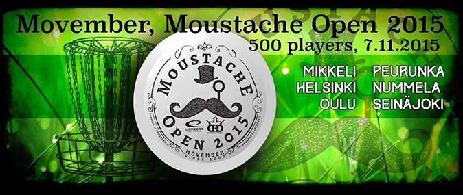

Kirjaudu sisään | Rekisteröidy

Kisakone

Yleistiedot
Moustache Open 2015 Oulu on hyväntekeväisyyskilpailu, jossa kilpailun tuotto tilitetään Movember-kampanjalle. Saman päivän aikana järjestetään Moustache Open -kilpailuja myös muilla paikkakunnilla, ainakin Helsinki, Mikkeli, Nummela, Peurunka ja Seinäjoki ovat mukana.
Hyväntekeväisyyskilpailu tarkoittaa myös samalla sitä että kilpailussa ei jaeta palkintoja.
Movember-kampanjassa kerätään rahaa miesten eturauhassyöpätutkimukseen, jotta tämä miehillä yleinen vaiva tunnistettaisiin ajoissa ja pysytyttäisiin kehittämään parempia hoitokeinoja. Kampanjasta lisää tietoa löytyy täältä: https://fi.movember.com/
Kilpailun osallistumismaksu on kaikissa sarjoissa 20€ joka sisältää pelaajapaketin (=kilpailua varten stämpätyn Latituden Retro -muovisen tai Dynamic Discin Prime -muovisen kiekon). Se mikä kiekko Oulun kilpailussa tulee pakettiin selviää myöhemmin. Kilpailun sisällä järjestetään erilaisia lisäkilpailuja joissa on sponsoroidut palkinnot. Perinteisen CTP-kisan lisäksi palkitaan mm. Parhaat Pensselit.
Ilmoittautuminen kilpailuun alkaa 27.09.2015 klo 18
Kilpailun osallistumismaksu pitää näkyä BSC Disc Golf Ry:n tilillä 23.10.2015. Huomiothan pankkien rahan siirtämisestä aiheutuvan viiveen.
Tilinumero: FI23 5740 8920 1831 72
Tilin omistaja: BSC Disc Golf Ry
Viestiin Moustache Open Oulu, oma nimi, luokka.
Kilpailussa pelataan 2 x 15 väylää Meri-Toppilan frisbeegolfradalla.
Kaikki luokat joihin on ilmoittatutuneita järjestetään.
Kilpailu on Suomen frisbeegolfliiton alainen kilpailu johon vaaditaan B-lisenssi. Kilpailusta saa siis ratingit talvi-iltoja lämmittämään.
| Nimi | Moustache Open 2015 Oulu |
| Paikka | Oulu |
| Aika | 07.11.2015 |
| Taso | Erilliskilpailu |
| Yhteystiedot | moc.liamg@akkualjp ,8811571-040 .p ,nenakkuaL isaP |
Aikataulu
| Kierros | Lähtöaika |
|---|---|
| Kierros 1 | 07.11.2015 09:00 |
| Kierros 2 | 07.11.2015 12:30 |
Ajankohtaiset uutiset
OB:t
Pelataan 15-väylää eli Meri-Toppilan radasta pois jää kiinteät väylät nro 5, 12 ja 14.
OB:t
1. Polku vasemmalla ja sen toinen puoli
2. -
3. Takana OB-kepitetty oja ja sen toinen puoli
4. -
5. OB-kepitetty oja oikealla ja sen toinen puoli
6. -
7. OB-kepitetty vasen reuna
8. OB vasemmalla ja oikealla olevat polut ja niiden toinen puoli
9. OB vesi oikealla
10. OB Polku ja sen toinen puoli oikealla ja takana/vasemmalla
11. -
12. -
13. OB-kepitys oikealla metsän reunassa, vasemmalla/takana polku ja sen toinen puoli, keskellä OB-kepitetty
saari
14. -
15. OB takana polku ja sen toinen puoli
Ilmoittautuminen on suljettu
Ilmoittautuminen kisakoneen kautta on nyt suljettu ja ne keneltä maksu ei ole saapunut tilillemme on poistettu kisasta. Tästä ajanhetkestä eteenpäin voi yhä päästä mukaan kilpailuun, mutta se tapahtuu seuraavasti:
1) ole yhteydessä kilpailun TD:hen ja tiedustele vieläkö kisaan pääsee mukaan
2) jos kisaan mahtuu saat samalla TD:ltä ohjeet kisamaksun suorittamisesta
Kerätään iso potti eturauhaselle!
Moustache Open 2015 - OULU
Moustache Open 2015 Oulu on hyväntekeväisyyskilpailu, jossa kilpailun tuotto tilitetään Movember-kampanjalle. Saman päivän aikana järjestetään Moustache Open -kilpailuja myös muilla paikkakunnilla, ainakin Helsinki, Mikkeli, Nummela, Peurunka ja Seinäjoki ovat mukana.
Hyväntekeväisyyskilpailu tarkoittaa myös samalla sitä että kilpailussa ei jaeta palkintoja.
Movember-kampanjassa kerätään rahaa miesten eturauhassyöpätutkimukseen, jotta tämä miehillä yleinen vaiva tunnistettaisiin ajoissa ja pysytyttäisiin kehittämään parempia hoitokeinoja. Kampanjasta lisää tietoa löytyy täältä: https://fi.movember.com/
Kilpailun osallistumismaksu on kaikissa sarjoissa 20€ joka sisältää pelaajapaketin (=kilpailua varten stämpätyn Latituden Retro -muovisen tai Dynamic Discin Prime -muovisen kiekon). Se mikä kiekko Oulun kilpailussa tulee pakettiin selviää myöhemmin. Kilpailun sisällä järjestetään erilaisia lisäkilpailuja joissa on sponsoroidut palkinnot. Perinteisen CTP-kisan lisäksi palkitaan mm. Parhaat Pensselit.
Ilmoittautuminen kilpailuun alkaa 27.09.2015 klo 18
Kilpailun osallistumismaksu pitää näkyä BSC Disc Golf Ry:n tilillä 23.10.2015. Huomiothan pankkien rahan siirtämisestä aiheutuvan viiveen.
Tilinumero: FI23 5740 8920 1831 72
Tilin omistaja: BSC Disc Golf Ry
Viestiin Moustache Open Oulu, oma nimi, luokka.
Kilpailussa pelataan 2 x 15 väylää Meri-Toppilan frisbeegolfradalla.
Kaikki luokat joihin on ilmoittatutuneita järjestetään.
Kilpailu on Suomen frisbeegolfliiton alainen kilpailu johon vaaditaan B-lisenssi. Kilpailusta saa siis ratingit talvi-iltoja lämmittämään.